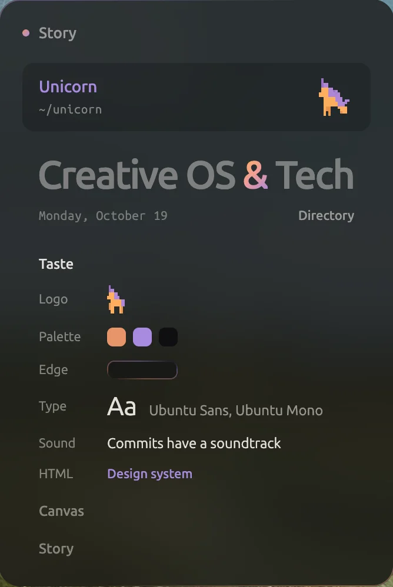
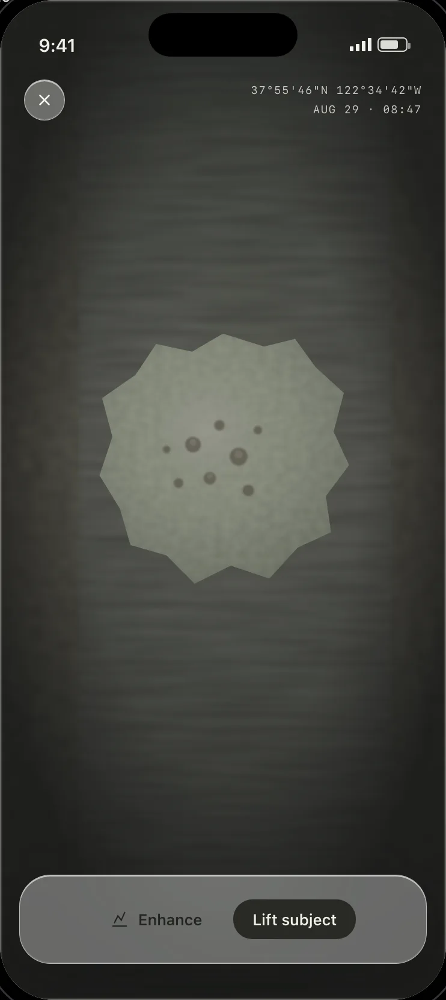
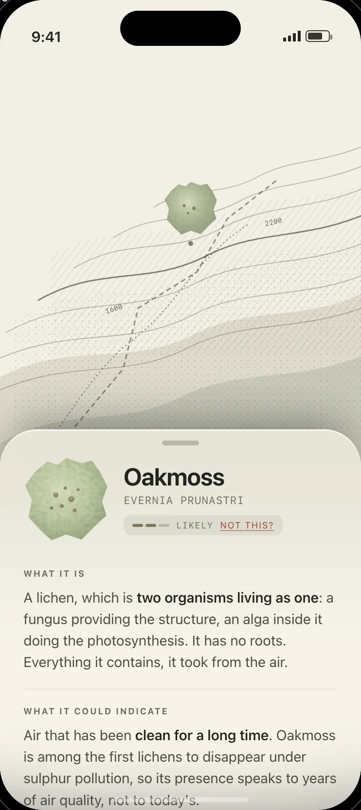

A design and creative technology studio. Apps, tools and sound for people who notice things.
Run by Ivy Grzybowski, Product Designer & Creative Technologist. Mill Valley, California. Remote.






tūī
kōkako
Recording · creditedL ← → R
Unicorn
What the Studio Does
Product Design
Research, flows and interface design for apps and tools, carried through to a working build.
Figma · PrototypesiOS Apps
Native SwiftUI with glass controls and one layout that adapts to every screen.
SwiftUI · XcodeInteractive Web
Studio sites, product pages and shader work that runs at sixty frames a second.
WebGL · GSAPSound Design
Interface sound and real recorded audio, sourced, credited and mixed for the screen.
Web Audio · Tone.js